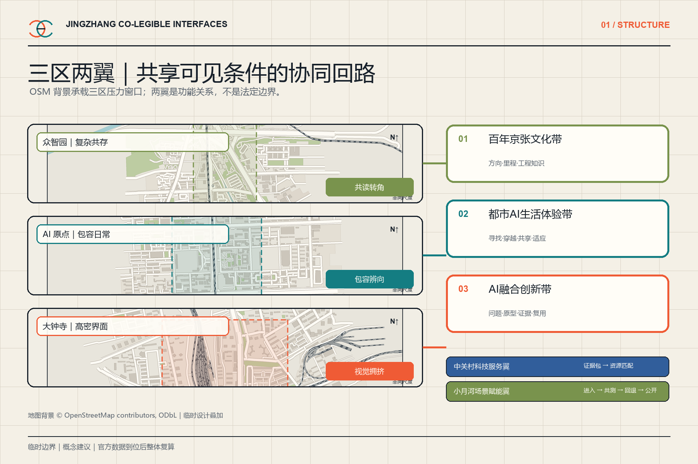
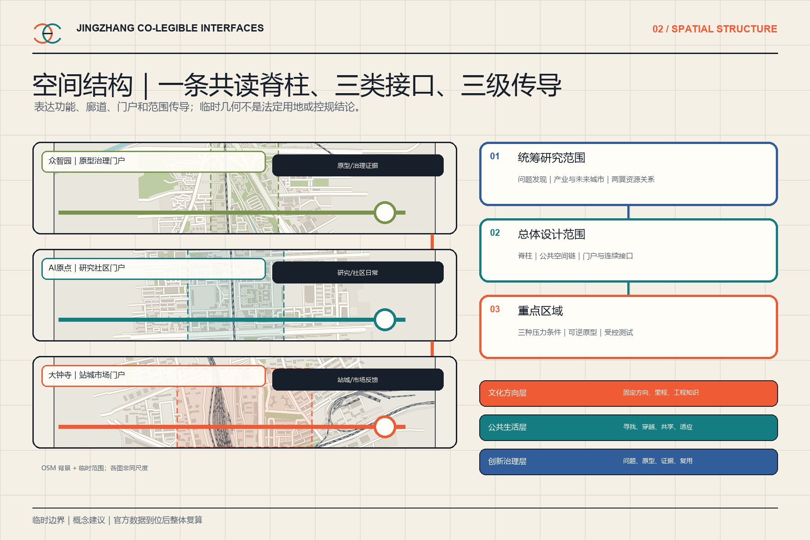
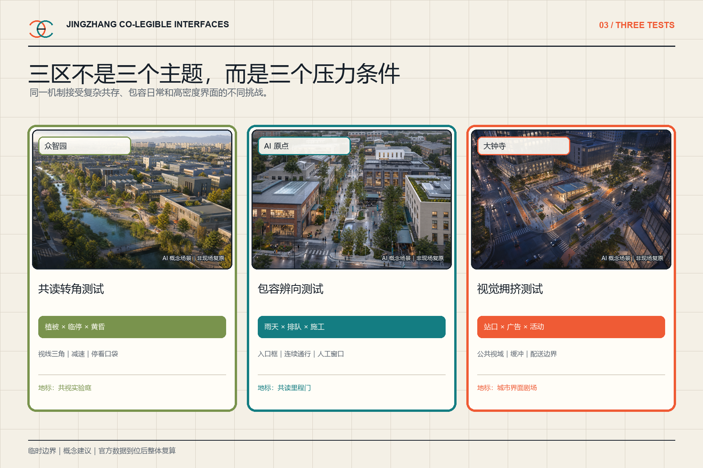
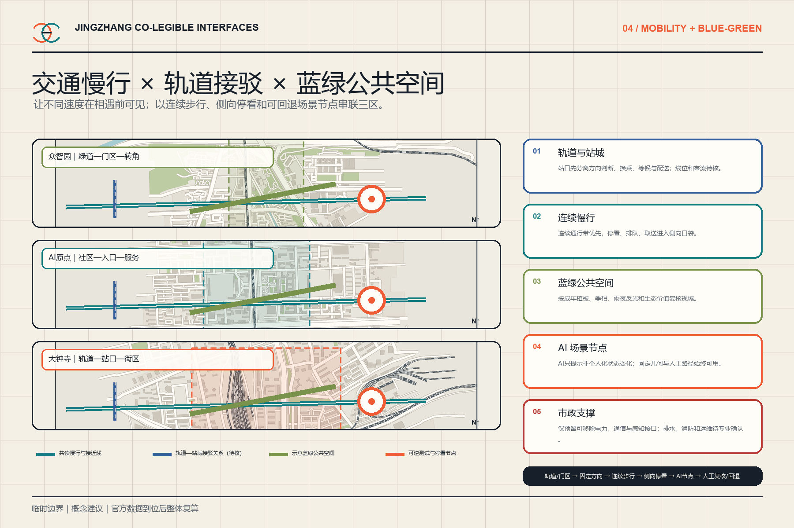
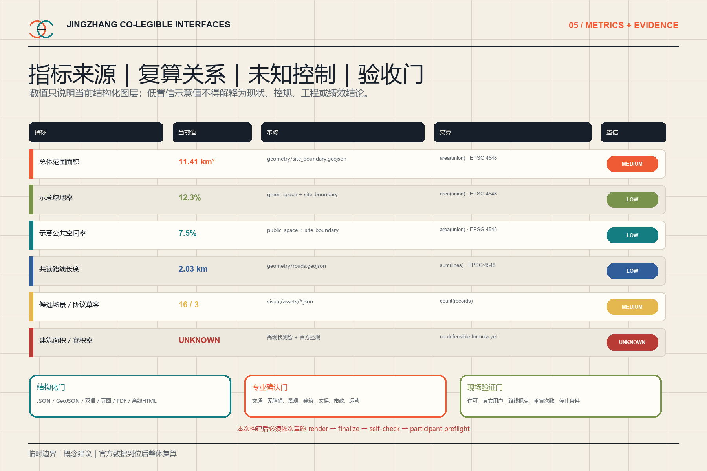

众智园
复杂感知共存
共读转角测试离线总览：一条共读脊柱、三区三测、16个场景与独立三问验证。
EN




所有地图为 OSM 背景加临时设计叠加；所有写实图为 AI 概念场景，非现场照片或现状复原。
复杂感知共存
共读转角测试包容日常辨向
包容辨向测试高密度城市界面
视觉拥挤测试三定位、五功能、三区两翼协同回路
确认门两翼精确边界、权属、载体和跨区流量均待官方资料与现场核验。
六个全球案例与土地—场景八要素机制
确认门企业、资金、算力、政策工具、伙伴和产业落位均未确认。
16场景、人物表、小月河体验链与测试协议
确认门小月河精确线位、连续通行、生态、文保、权属和客流条件待核。
遗址公园公共空间、东西/南北联系、大钟寺场景、三地标与六组件
确认门遗址公园联系、东西穿越点、南北连续路线、大钟寺场景载体、地标精确位置、产权、文保与工程条件均待确认。
四类文化资源、四步故事线、标识与国际文案
确认门具体遗存、年代、原状、文保价值、改造范围、档案图像与人物商标权利待核。
四季活动、城市共读挑战IP、开发者运营与转化路径
确认门活动IP和传播系统仅为设计方向；名称权利、日期、预算、规模、主办承办、开发者、企业、国际伙伴与运营RACI待确认。
发现植被生长、临停或临设是否侵入已确认的公共视域。
检查围挡、改道、临时活动和公共导向是否与批准版本一致。
比较广告、活动、雨夜反光与公共方向层的布局版本。
建立连续可见的公共辨向带；把商业屏幕移出首个判断视域
设置跨时段可识别的入口框与门牌层级；入口前保留无停放视域
使用垂直与地面双重固定标志；强化路径边界和入口构造
在到达路径上设置提前可见的垂直识别；建立短停口袋和减速进出段
建立可维护的视线三角；按视线高度分层控制植被
把人行连续面抬高贯穿车行口；门区退让形成双向观察区
明确交叉角度和优先关系；把候客与停车移出观察区
为信号与等待信息建立低干扰背景区；限制关键视域内动态高亮内容
把座椅和停留移入侧向口袋；在视线允许处设置超越段
扩展雨棚并把队列折入侧向；保留连续清晰的无障碍带
划定连续公共导视保护带；把商业动态内容移出关键判断视域
将深度阅读和触觉模型放入侧向安静口袋；保持方向层连续
按成年冠幅与眼高建立种植分层；把视线三角写入养护图而非只写高度
在最后可选择点设置模块化改道框；同步遮蔽失效旧信息
设置多个离流停看和恢复口袋；让关键方向信息跨高度冗余
建立不依赖电力的固定方向骨架；让动态层关闭时明确显示不可用而非冻结
site_area_sqm 来自临时边界；green_ratio 与 public_space_ratio 只复算当前示意图层，混合脚手架与概念原型，不代表现状率、控规指标或审定值。
1.3 / 1.4 / 1.5 · agent.1—agent.6 · 15 concept-delivery items · 16 candidate records · 3 protocol drafts · AI OFF × 3
用地分区｜交通慢行｜蓝绿公共空间｜建筑｜更新项目均已挂接到结构化文件；六项概念响应已打包，但现场调查、正式几何、专业阈值、运营主体和工程验证仍未完成。
来源登记见 sources.json；官方、背景与 provisional 用途分开。假设登记见 assumptions.json；边界、控规、现状、专业阈值、运营与提交身份均保留确认门。